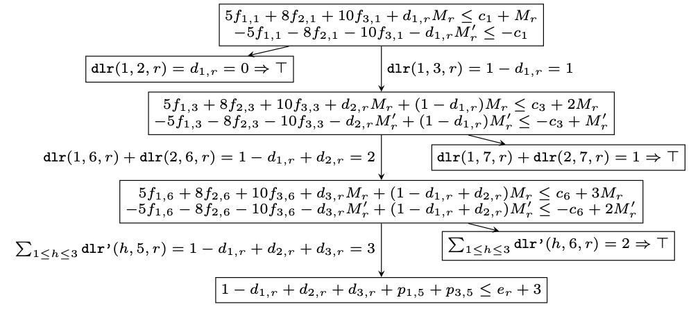

- どの深さでも CART 以上CART の木を初期解にした DTIPs は、5 データ（分類 3、回帰 2）・深さ 1〜5 のすべてで、学習データでの精度が CART と同じか高く、誤差は同じか小さかった。
- 差別 0.05 → 0Bank の先頭 1,000 行で、精度 0.86・差別 0.05 の CART の木から始め、15 分で差別 0・精度 0.85 の深さ 3 の木を得た。
- 偽陽性 0 の木同じデータで、偽陽性 0・偽陰性 101 の木と、偽陽性 672・偽陰性 0 の木を、目的に式を 1 つ足すだけで得た。
貪欲法は各ノードの分岐を局所的に決めるので、できる木が最適から遠いことがある
最適な決定木を学習する問題は NP 完全で（Hyafil & Rivest 1976）、ふだんは CART や ID3 のような貪欲法が使われる。貪欲法はノードごとに、そこに届いたデータだけで局所的に最良の分岐を選び、子ノードで同じことを繰り返す。計算は速いが、できる木は最適から遠いことがある。
論文は深さ \(k\) を決めた木のすべての決定を同時に最適にするため、学習の問題を整数線形計画で表す。これを DTIP（decision trees as integer programs）と呼び、CPLEX のような MIP ソルバーで解く。論文は、決定木の学習全体を整数計画で表したのは自分たちが最初だと述べている。同じ年に出た OCT（Bertsimas & Dunn 2017）も混合整数最適化で決定木を学習する。
特徴量の値を順位の整数に置き換え、しきい値を整数変数として扱えるようにする
先行研究は特徴量を \([0, 1]\) に線形に縮めていた。big-M の値を小さく保てるからである。DTIP はこれに代えて、各特徴量の異なる値を、大小の順だけを保って整数に置き換える非線形の変換を使う。論文が挙げる利点は 4 つある。
- ノードのしきい値を連続値ではなく整数で表せる。ソルバーは各行が左右どちらに進むかではなく、しきい値の値で分枝でき、探索木が小さく、偏りにくくなる。
- 連続する整数の値をもつ行がすべて同じクラスなら、それらの値を 1 つの整数にまとめられる。
- 最も多く出る値を 0 にすれば、制約の係数に 0 が増える。
- 値の範囲を 0 のまわりに寄せられるので、big-M の値が小さくなる。
Iris の例では、SepLen の 4.9、4.7、4.6 は Iris-setosa にしか出ないので 1 つの整数 −11 にまとめられ、SepWid で最も多い 3.0 は 0 になる（論文 Table 1）。論文は、線形の変換のほうが良い問題もあるが、この変換で得られる解が大きく良くなったと述べ、1,000 行のデータを扱えたのもこの変換のおかげだとしている。
各行の経路を、葉ごとの変数ではなく深さごとの 0-1 変数 k 個で表す
分岐ノード \(j\) には、使う特徴量を選ぶ 0-1 変数 \(f_{i,j}\)（\(\sum_i f_{i,j} = 1\)）と、しきい値を表す整数変数 \(c_j\) を置く。行 \(r\) が深さ \(h\) で左右どちらに進むかを 0-1 変数 \(d_{h,r}\) で表す。葉ごとに「その葉に入るか」の変数を置くと 1 行に \(2^k\) 個要るが、深さごとなら \(k\) 個で済む。論文はこれを単項ではなく二進の符号化と呼ぶ。
行 \(r\) がノード \(j\) に届き、そこで左に進むなら、選んだ特徴量の値 \(\sum_i v(r,i) f_{i,j}\) はしきい値 \(c_j\) 以下でなければならない。右に進むなら \(c_j\) より大きい。この条件を、根から \(j\) までの経路の向き \(\mathrm{dlr}(h, j, r)\) の和を使った big-M の制約で書く。\(M_r\) は行ごとに決めたできるだけ小さい定数である。
\(d(j)\) はノード \(j\) の深さで、\(\mathrm{dlr}(h, j, r)\) は \(j\) への経路が深さ \(h\) で左なら \(d_{h,r}\)、右なら \(1 - d_{h,r}\) である。経路が \(j\) を通らない行では、左辺の和が小さくなって制約は自動的に満たされる。右に進む場合も同じ形の制約を置く。誤分類は、行が葉 \(l\) に届き、その葉の予測 \(p_{l,t}\) が行のクラス \(t(r)\) と違うときに \(e_r = 1\) となる制約で数え、\(\sum_r e_r\) を最小にする。
全体で制約は \(O(n(u + v))\) 本、0-1 変数は \(O(mu + nk + vy)\) 個、整数変数は \(u\) 個である（\(n\) は行数、\(m\) は特徴量の数、\(u\) は分岐ノードの数、\(v\) は葉の数、\(y\) はクラスの数）。行数に対して線形で、0-1 変数は行数の \(k\) 倍程度にしかならない。さらに、しきい値を選んだ特徴量の値の範囲に収める制約と、同じ親をもつ 2 つの葉が同じ予測をしないようにする制約で定式化を強める。回帰木では誤分類の制約を、葉の予測値 \(p_l\) との絶対誤差を数える 2 本の制約に置き換える。

CART の木を初期解にした DTIPs は、すべてのデータと深さで CART と同じかより良い木を得た
比較したのは scikit-learn の CART、初期解なしで解く DTIP、CART の木を初期解にする DTIPs で、1 問 30 分の時間制限で深さ 1〜5 の木を学習した。目的は DTIP の性能を示すことなので、全データで木を作り、その全データでの精度（回帰では絶対誤差）を報告している。分類は Iris（150 行）、Diabetes（768 行）、Bank（4,521 行、51 属性）、回帰は RedWine（1,599 行）と Boston（506 行）である。
| Diabetes（精度） | 深さ 1 | 2 | 3 | 4 | 5 |
|---|---|---|---|---|---|
| CART | 0.7357 | 0.7721 | 0.776 | 0.7930 | 0.8372 |
| DTIP | 0.75* | 0.7773 | 0.7969 | 0.7852 | 0.7852 |
| DTIPs | 0.75* | 0.7773 | 0.7943 | 0.8255 | 0.8503 |
表1 Diabetes データの学習データでの精度（論文 Table 3 の一部）。* は最適解であることを示す。
Iris では、DTIP と DTIPs は深さ 1〜5 のすべてで最適な木を得た。CART が最適だったのは深さ 1、2、5 だけである。Diabetes では深さ 1 で最適な木を得たが、深い木ほど問題が難しくなり、深さ 4 と 5 では初期解なしで解いた DTIP の精度が CART を下回った。Bank の深さ 4 と 5 では DTIP の精度が 0.1152 にとどまり、論文はソルバーがまだ前処理の段階にあったと説明している。一方、初期解を与えた DTIPs はどのデータ・深さでも CART の木を改善するか同じ精度を保った。回帰でも結論は同じで、DTIPs が最も良かった（たとえば Boston の深さ 5 で絶対誤差 954、CART は 1012）。
差別をなくす制約や、偽陽性・偽陰性を減らす目的も、式を 1 本足すだけで加えられる
整数計画で表すと、正解率や誤差以外の線形な目的や、木を作る段階での制約を直接書ける。差別を考慮した木では、異なる行の集合のあいだで陽性と予測される割合の差を誤差 \(e_r\) の和から計算する制約を足し、その差にデータの大きさの重みをかけて目的関数に加えた。Bank の婚姻の有無（married）を保護すべき属性とみなし、Bank は DTIP で効率よく解くには大きすぎるので先頭 1,000 行を使った。精度 0.86、差別 0.05 の scikit-learn の木から始めて 15 分解くと、差別 0、精度 0.85 の深さ 3 の木が得られた。差別の制約なしで 15 分解いた DTIP の精度は 0.81 だった。
不均衡なデータでは、問題によっては偽陽性か偽陰性をほとんど出さない木が必要になる。同じ 1,000 行で偽陽性（または偽陰性）の数を数える式を足し、大きな重みで目的関数に加えて 15 分解くと、偽陽性 0・偽陰性 101 の深さ 3 の木と、偽陽性 672・偽陰性 0 の木が得られた。
決定木の学習を整数計画で表す初期の定式化で、制約と目的を足しやすいことを先に示した
- 解く問題：深さちょうど \(k\) の分類木（誤分類の数）と回帰木（絶対誤差の和）。木の複雑さへの罰則はない。
- 分岐：単変量。特徴量を順位の整数に置き換え、しきい値は整数変数で表す。
- 規模：論文は深さ 5 までの木を 1,000 行程度のデータから学習できると結論し、それより大きいデータでは制約が多すぎて MIP ソルバーでは効率よく解けないと述べている。
（解説者の注）同じ著者らの BinOCT（2019）は、しきい値を二値のビットで表し、行の制約をまとめることで、0-1 変数の数を行数によらない形にした。差別を考慮した最適な木は、Aghaei ら（2019）が MIO の目的関数に差別の指標を加える形で扱っている。
@inproceedings{verwer2017learning,
title = {Learning Decision Trees with Flexible Constraints and Objectives Using Integer Optimization},
author = {Verwer, Sicco and Zhang, Yingqian},
booktitle = {Integration of AI and OR Techniques in Constraint Programming (CPAIOR 2017)},
editor = {Salvagnin, D. and Lombardi, M.},
series = {Lecture Notes in Computer Science},
volume = {10335},
pages = {94--103},
publisher = {Springer},
year = {2017},
doi = {10.1007/978-3-319-59776-8_8}
}
ページの数値と図は、TU Delft の機関リポジトリにある著者稿（Accepted author manuscript）による。Springer の出版版の本文は自動取得できなかったため、照合していない。書誌は Crossref と著者稿の表紙で確認した。